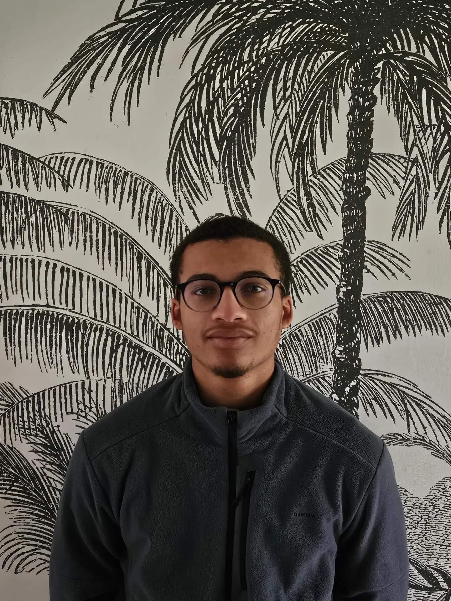

À propos

Imaginer des espaces
qui prennent racine.
Je m'appelle Noah Jean-Louis et je me forme à l'aménagement paysager. Je m'intéresse aux lieux qui relient les usages quotidiens au paysage et à leur environnement.
Mon approche associe observation du site, composition végétale et représentation en plan et en volume. Chaque projet est une occasion de faire dialoguer les éléments naturels et construits.
Une démarche située
Chaque lieu possède ses sols, ses rythmes et ses usages. Le projet commence par les observer, puis compose avec l'eau, le vivant et les pratiques du quotidien.
Compétences
- Conception d'espaces extérieurs
- Plans et représentation 3D
- Choix des végétaux et matériaux
- Lecture du site et de ses usages
Parcours
BTSA Aménagements paysagers · formation en cours
Parlons d'un projet